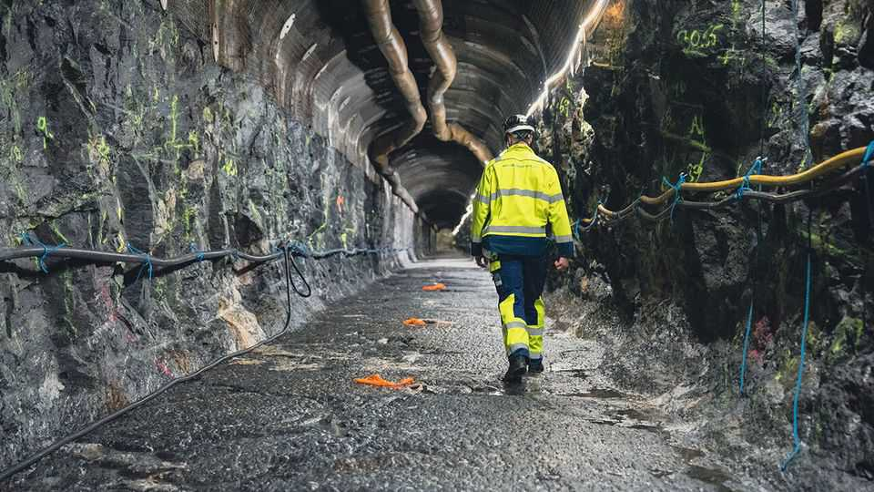

Finland has a fix for nuclear waste
At least until the next ice age

Oct 1st 2026
After four and a half decades of planning, it took only ten hours to drill through the 1.9bn-year-old bedrock. Final digging began last month at Onkalo, a geological disposal facility (GDF) in Finland. It will be the resting place for 6,500 tonnes of hazardous nuclear waste. Sealed 400 metres beneath the earth, its radiation will remain contained for over 100,000 years.
Since the infancy of nuclear power, scientists have debated how to safely dispose of its waste. GDFs are the gold standard, and Onkalo will be the first on Earth. Posiva, the firm that runs it, aims to have it ready by year’s end. It comes at a time of renewed enthusiasm for the nuclear industry, driven by the desire for carbon-free electricity and wars that have disrupted fossil-fuel supplies. Global nuclear-power output will double by 2050, reckons the UN’s International Atomic Energy Agency. France, Sweden and Slovakia are building reactors. Belgium, Italy and Poland hope to as well.
About 70% of the world’s nuclear waste is currently held in cooling pools or in dry storage. These are vulnerable to decay and unstable weather. The volume of waste created is small: a typical reactor produces 25-30 tonnes of spent fuel per year, about 0.5% of Onkalo’s capacity. For Europe, pooling waste in a handful of shared GDFs would be most efficient. But most countries’ regulations make this impossible. Finnish legislation bars Onkalo from taking waste from plants outside Finland. Instead, 14 European countries are currently planning to build their own GDFs.
This is foolish. Transporting nuclear waste is not particularly dangerous; it is already shipped by road and rail. The problem is political constraints, not technical ones, says Sergey Churakov, a waste expert at the Paul Scherrer Institute in Switzerland. Once inside a GDF it is even safer—at Onkalo, until at least the next ice age. At worst there may be barely detectable leaks “during the next glacial period, estimated to begin in approximately 60,000 years”, says Antti Tynkkynen of Finland’s nuclear regulator. GDFs are pricey: Onkalo is costing $6bn. Better and cheaper to concentrate the risk than to spread it around.■